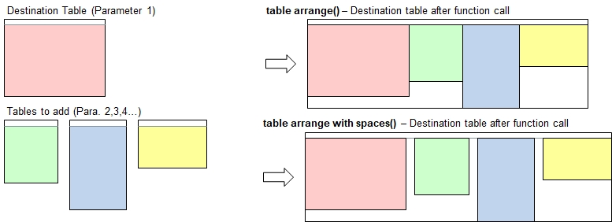

Function Names
table arrange, table arrange with spacingDescription
Theses simple functions arrange multiple tables side-by-side, with or without spacing (1 blank column) inbetween.

Call as: procedure
Restrictions
Indirect parameter passing is enabled
Parameter count
2-4
Parameters
| No. | Type | Description |
|---|---|---|
| 1. input |
literal | Name of destination table The other tables are arranged on the right-hand side next to this table. |
| 2, 3, etc. input |
literal | Name of additional table(s) |
Examples
table initialize( t1, { { Left, Right }, { L1, R1 }, { L2, R2 }, { L3, R3 }, { L4 , R4 } } );
table initialize( t2, { { Animal, Size, Leg count }, { ant, tiny, 6 }, { donkey, big, 4 }, { whale, huge, 0 } } );
table initialize( t3, { City, Aberdeen, Boston, Charlotteville, Denver } );
table copy table( t1, t0 );
table arrange( t0, t2, t3 );
table list( t0 );
echo("This one is with spacing");
table arrange with spacing( { t1 .. t3 } ); // Note: Indirect parameter passing demonstrated here
table list( t1 );
Output
0 : Left | Right | Animal | Size | Leg count | City
1 : L1 | R1 | ant | tiny | 6 | Aberdeen
2 : L2 | R2 | donkey | big | 4 | Boston
3 : L3 | R3 | whale | huge | 0 | Charlotteville
4 : L4 | R4 | | | | Denver
This one is with spacing
0 : Left | Right | | Animal | Size | Leg count | | City
1 : L1 | R1 | | ant | tiny | 6 | | Aberdeen
2 : L2 | R2 | | donkey | big | 4 | | Boston
3 : L3 | R3 | | whale | huge | 0 | | Charlotteville
4 : L4 | R4 | | | | | | Denver